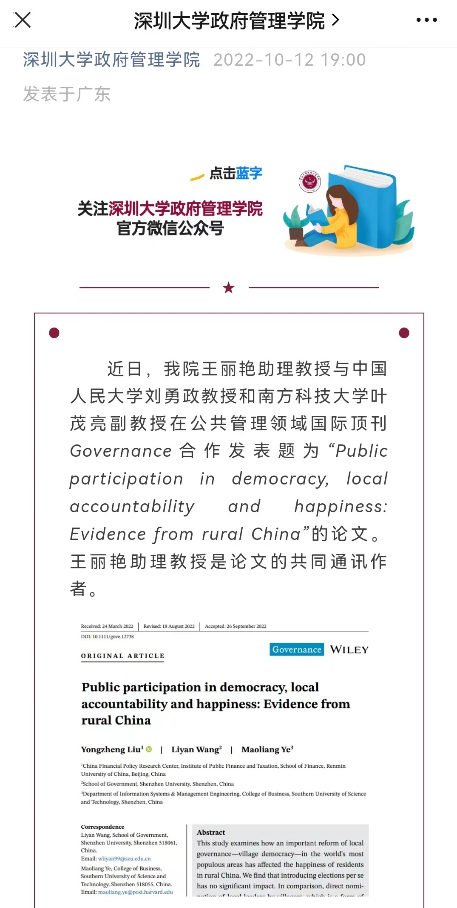

叶茂亮副教授与中国人民大学刘勇政教授、深圳大学王丽艳助理教授两位老师的论文“Public Participation in Democracy, Local Accountability and Happiness: Evidence from Rural China”近期在公共政策国际顶刊Governance在线发表。三位合作者按姓氏排序、同等贡献，其中叶茂亮副教授为（共同）通信作者。该研究开始于叶老师在人民大学工作期间，写作和修改过程中得到学生、研究助理、经济学/公共管理/政治学同行的诸多帮助（已在文中致谢）。研究背景《中华人民共和国村民委员会组织法》是我国“全过程人民民主”的重要一环。
pdf正文 Supplementary Material（在线附录） Accepted Preprint Full Version with Kudos Summary One-page Public Introdction Web (Wiley & Kudos) One-page Public Introduction pdf (Wiley & Kudos)
Governance（全称Governance-An International Journal of Policy, Administration and Institutions），为公共政策国际顶刊，国际通用的商科ABS期刊列表4分期刊，FMS中国管理科学高质量期刊列表国际 A刊（FMS：中国国优选法统筹法与经济数学研究会、管理科学与工程学会、中国系统工程学会三家学会联合Federation of Management Societies of China），是公共管理/公共政策学科国内外公认排在前5名（Top 5）的国际顶级刊物，也是政治学学科公认的国际A刊。其它前5名的公共管理/公共政策刊物一般包括Journal of Public Administration Research and Theory (JPART)、Public Administration Review (PAR)、Public Management Review (PMR)，而Public Administration (PA) 、Journal of Policy Analysis and Management (JPAM)或Policy Studies Journal (PSJ)有时也列为Top 5刊物。Governance致力于探讨行政政治、公共政策、行政管理和国家组织(executive politics, public policy, administration, and the organization of the state)等方面的前沿学术问题。在公共管理/公共政策国际顶刊中，其侧重于政治/政策过程或政策评估，是公共管理/公共政策与政治学、政治经济学的沟通桥梁，与着重于公共管理的JPART、PAR、PMR有所区分。
该研究本身是行为经济学与公共财政、政治经济学的交叉，涉及以下经济、政策和管理议题：农村治理，村民选举，基层民主，全过程人民民主，公众参与，村干部提名，基层问责，治理绩效，农村财税和公共服务，幸福感。
以下是深圳大学政府管理学院对该研究成果的宣传。
